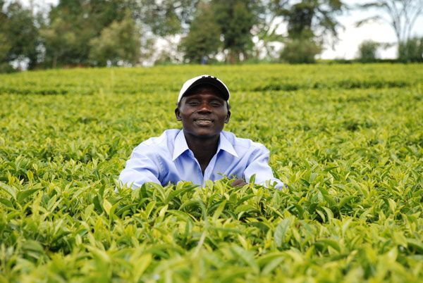
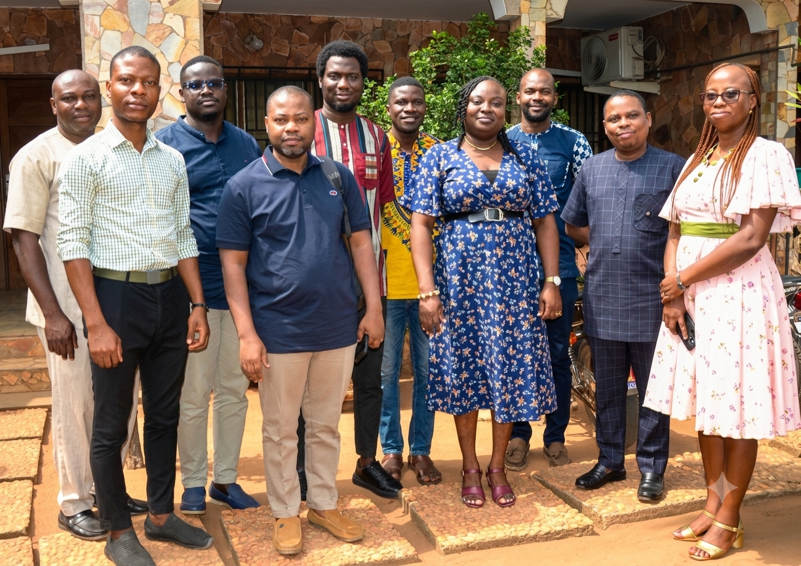

A propos de nous

AGRI-TOGO est une coopérative agricole engagée dans le développement d'une agriculture durable, solidaire et performante. Elle rassemble des producteurs, des partenaires et des acteurs du secteur agricole afin de mutualiser les ressources, partager les connaissances et améliorer les conditions de production. Grâce à un accompagnement technique, des solutions innovantes et une approche collaborative, AGRI-TOGO contribue à accroître les rendements, renforcer les revenus des agriculteurs et promouvoir des pratiques agricoles respectueuses de l'environnement au service des communautés.
Comment fonctionnent AGRI-TOGO
1
Excellence
Nous visons les plus hauts standards de qualité dans nos pratiques, nos services et nos productions afin de garantir la satisfaction de nos membres et partenaires.
2
Innovation
Nous encourageons l'adoption de solutions agricoles modernes, de technologies adaptées et de pratiques innovantes pour améliorer durablement la performance des exploitations.
3
Durabilité
Nous promouvons une agriculture responsable qui préserve les ressources naturelles, renforce la résilience des exploitations et contribue au développement des communautés rurales.
4
Coopérative
Nous croyons en la force du collectif. En favorisant la solidarité, le partage des connaissances et la mise en commun des ressources, nous créons de la valeur durable pour l'ensemble de nos membres.
Notre histoire
Chez AGRI-TOGO, nous croyons que l'agriculture est bien plus qu'une activité économique : elle est un moteur de développement, d'innovation et de transformation sociale. Créée au Togo, notre coopérative agricole rassemble des producteurs des régions Maritime et des Plateaux autour d'une ambition commune : construire une agriculture plus performante, durable et créatrice de valeur. En fédérant les compétences, les ressources et les savoir-faire, nous donnons à nos membres les moyens de relever les défis d'aujourd'hui et de saisir les opportunités de demain. Depuis nos débuts, nous accompagnons les agriculteurs à chaque étape de leur développement en leur offrant un accès à des formations techniques, des intrants de qualité, des solutions innovantes, des équipements adaptés et des débouchés commerciaux. Notre approche repose sur la coopération, l'excellence et l'innovation afin d'améliorer durablement la productivité, les revenus des producteurs et la qualité des productions. Ancrée dans les territoires, AGRI-TOGO œuvre chaque jour pour promouvoir une agriculture responsable, renforcer les chaînes de valeur agricoles et contribuer au développement économique des communautés rurales. Parce que chaque exploitation est unique, nous mettons l'humain, le partage des connaissances et la performance au cœur de notre action. Aujourd'hui, AGRI-TOGO poursuit son expansion avec une vision ambitieuse : devenir une référence de la coopération agricole au Togo et en Afrique de l'Ouest, en connectant les producteurs aux marchés, en encourageant l'innovation et en bâtissant une agriculture compétitive, durable et résiliente. Ensemble, nous cultivons les terres d'aujourd'hui pour récolter les opportunités de demain.

Nos producteurs et membres
Région Maritimes
- 22 producteurs
- 5 associations
- 4 Organisations Non Gouvernementales
- 2 Partenaires
Région des Plateaux
- 12 producteurs
- 3 associations
- 4 Organisations Non Gouvernementales
- 5 Partenaires
Nos régions d'action
-
ONG L'Or Vert — Aného
ONG locale d'appui au développement rural — Tél : +228 99 91 12 23 33 -
Établissements AGRO-LITTORAL — Vogan
Produit : gari — Tél : +228 92 11 44 77 -
Domaine Agricole de l'Avé — Kévé
Produit : ananas séché — Tél : +228 91 33 66 99
-
Groupement Féminin « Espoir de Kloto » — Kpalimé
Produit : gari et tapioca — Tél : +228 70 22 46 08 -
ONG « Progrès Céréales Plateaux » — Atakpamé
ONG d'accompagnement technique et financier — Tél : +228 95 66 77 88 -
Les Vergers de Tomegbe — Badou
Producteur : chips de manioc — Tél : +228 99 22 55 88
Carte simplifiée — régions Maritime et Plateaux